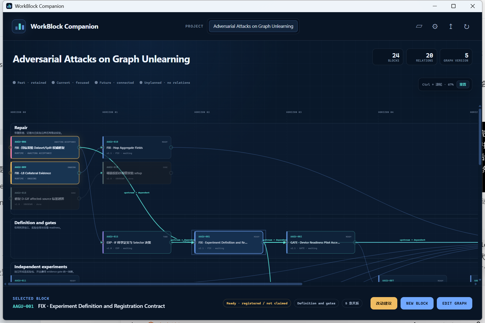
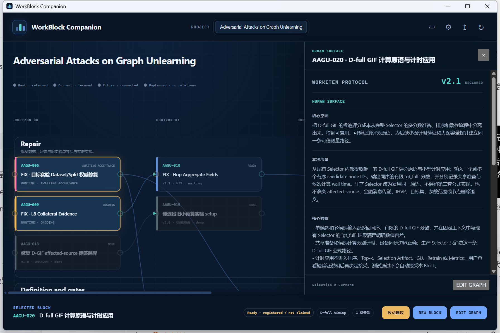
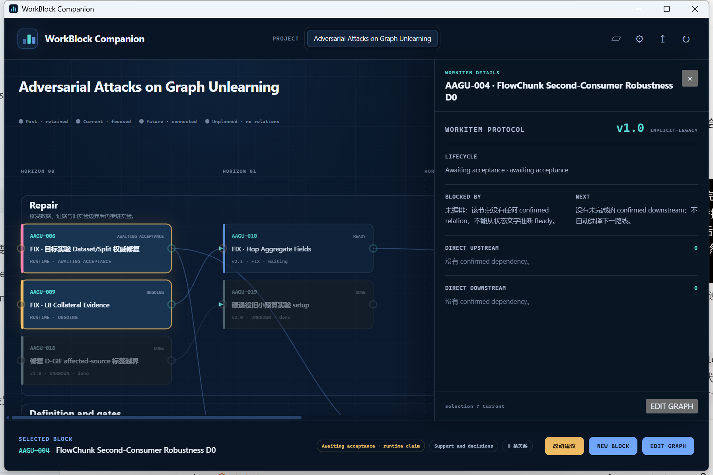

实际增量
本候选把 14 个尚未 Claim 的 AAGU Blocks 原位升级为 WorkItem 2.1：每份 Record 现在都以唯一、首个 ## Human Surface 直接说明核心意图、本次增量和核心验收；旧人类权威入口已收敛。成员 ID、状态、关系、priority 文本、运行/SSH/GPU 边界、来源和历史没有随迁移改写，成员也没有被 Claim 或执行。
迁移、语义守恒与真实 mixed-version Companion 观察已完成；当前候选仍等待用户决定。
本候选把 14 个尚未 Claim 的 AAGU Blocks 原位升级为 WorkItem 2.1：每份 Record 现在都以唯一、首个 ## Human Surface 直接说明核心意图、本次增量和核心验收；旧人类权威入口已收敛。成员 ID、状态、关系、priority 文本、运行/SSH/GPU 边界、来源和历史没有随迁移改写，成员也没有被 Claim 或执行。
14/14 validator 与语义守恒检查通过。COMP-042 exact candidate 08be674… 从 fresh registry 加载真实 AAGU 临时快照，观察到 24 nodes、20 relations 和 1.0/2.0/2.1；AAGU-020 逐字显示 Human Surface，AAGU-004 只显示 legacy 机器事实。live AAGU 非 owner facts 与既有 Claims 未被浏览动作改写。
Agent 建议接受当前 AAGU-024 report-bearing source HEAD。最终决定者是用户；决定对象不是 COMP-042、WB-228 或 Apply target。installed nested-finish hotfix 尚未进入 WB-228 candidate，这一工具链边界独立保留。


v2.1 / declared 与固定三段；确定性读回与 Record 逐字一致。
| WorkItems | 迁移前 | 当前 | 守恒 |
|---|---|---|---|
| AAGU-001 / 002 / 003 / 005 | 实际 1.0；旧 Block human acceptance surface | 2.1；唯一首个 Human Surface | 状态、关系与边界原文不变 |
| AAGU-007 / 008 / 011 / 012 / 013 / 014 | 实际 1.0；无正式人类入口 | 2.1；唯一首个 Human Surface | 状态、关系与边界原文不变 |
| AAGU-010 | 2.0；无正式人类入口 | 2.1；唯一首个 Human Surface | 既存 Record P1 / WORKPLAN P0 差异未改 |
| AAGU-020 / 021 / 022 | 实际 1.0；旧 Intent | 2.1；唯一首个 Human Surface | 状态、关系与边界原文不变 |
| 判断 | 结果 | 实际观察 |
|---|---|---|
| WorkItem 2.1 结构 | PASS | 14/14 members + owner 通过 current Human Surface validator。 |
| 非 Human Surface 守恒 | PASS | 14/14 去掉迁移区块后其余非空行逐字相同。 |
| 禁止对象与 Claim | PASS | 9 个保护 WorkItems、WORKPLAN、既有 Claims 不变；成员 Claim=0。 |
| 真实 mixed-version view | PASS | 24 nodes、20 relations、v1.0/v2.0/v2.1 = 5/4/15。 |
| Native visual | PASS | 三张 1792×1196 原生窗口截图覆盖全图、2.1 正例与 legacy 负例。 |
| COMP regressions | PASS | project-source-adapter + mixed-version Campaign：18/18 tests PASS。 |
| 零写入 | PASS | fixture view/capture 前后 clean；live 非 owner graph/WorkItems guard 零变化。 |
| Report pair / HTML QA | PASS | 合同校验通过；1280×720 与 390×844 无横向溢出，3 张图无断图，warning/error console=0。 |
f6832b9… 在真实 AAGU 的 unquoted Item Type: Block 处 fail closed；没有改 AAGU，也没有改 fixture 绕过。
COMP-042 在同一 Block 补齐 declared 2.0/2.1 quoted/unquoted Todo/Block coverage，形成 08be674…。
AAGU 从 fresh registry 重新加载相同 clean snapshot，确定性 view 与 native 三场景全部 PASS。
native runtime 保留 Graph 写能力；本次安全性来自 temp registry/fixture 隔离与 hash/clean guard。AAGU-010 的既存 priority 差异未被本次迁移裁决。installed run_git.py nested-finish hotfix 的 SHA-256 为 BC2B64DD…AB272C0；含空 .git/ 的 nested fixture 已验证 3-command finish 与 project 外 dirt guard，且该 hotfix 尚未进入 WB-228 candidate bbb2990…。未运行实验、未 SSH、未修改 Cache/Result/DocMap，也未 Merge / Apply、push、install 或 cleanup。